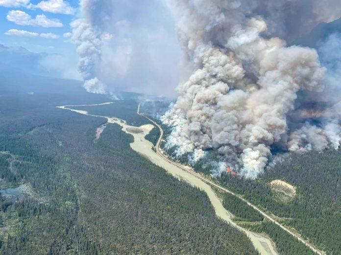
亚省贾斯珀国家公园（Jasper National Park）7月时遭遇了严重山火，整个城镇约一万名居民以及公园的游客被迫紧急撤离。这场山火在炎热干燥的天气条件下迅速蔓延，造成了严重的破坏。贾斯珀国家公园周五（1日）表示，当地山火仍未受到控制，山火面积已经扩大至约 39,000 公顷。有大温居民在接受《网》访问时表示，她和家人每两年都会自驾前往贾斯珀度假，而贾斯珀更是其父亲生前第一次赴加探亲的旅游点，对山火摧毁这个美丽小镇的深切痛心，她亦借此与读者分享了近年在贾斯珀拍摄的美景。
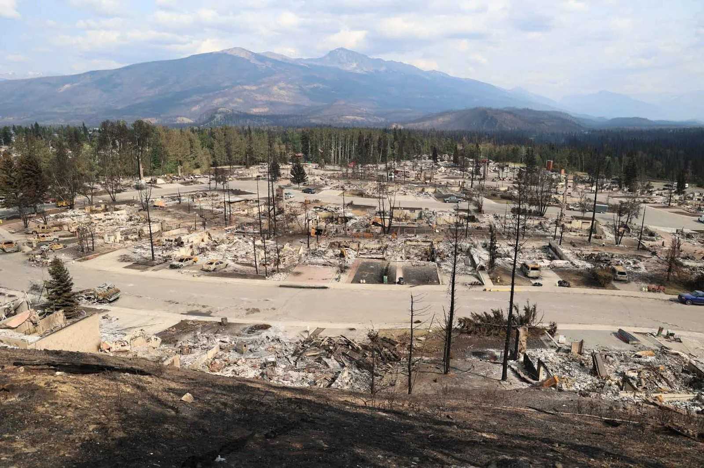
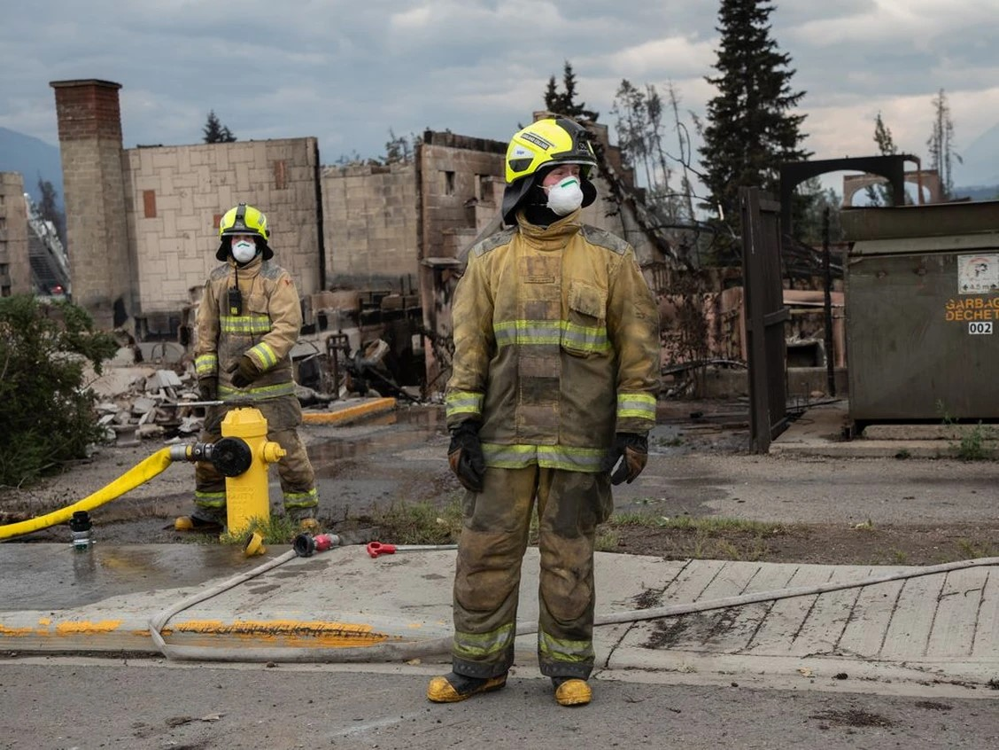
大温地区的居民杨女士近日不断关注贾斯珀的山火新闻，她表示，贾斯珀是加拿大的国宝，山火摧毁了这个美丽的小镇，也让她和父亲的珍贵回忆化为灰烬。杨女士忆述指：“在十多年前，父亲第一次从香港飞往温哥华探望她一家三口，大家驾车从温哥华出发，途径甘碌市(Kamloops)，一直前往贾斯珀度假。”
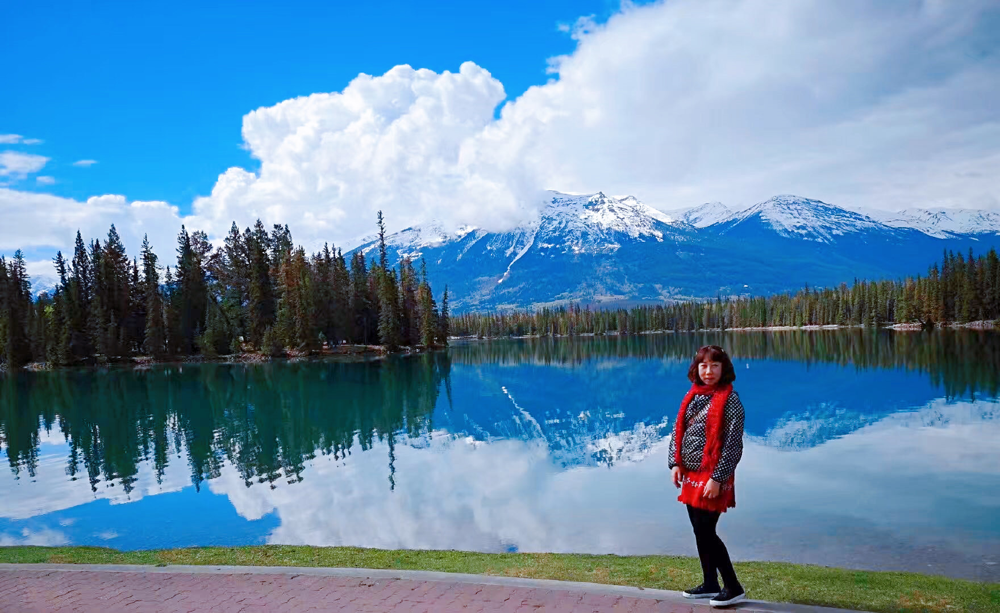
杨女士的父亲被贾斯珀的自然生态和冰川所深深吸引，当时他更在贾斯珀对杨女士说：“你能移民到这个美丽的国家，真是你的福气！以前我也许不明白你为什么要离开香港移民去加拿大，如今我终于有了答案，明白和理解你当日的选择。”
这次贾斯珀之旅成为了杨女士这辈子与父亲唯一的一次旅行，也是最后一次。杨女士的父亲当年在回港后不久便病逝，贾斯珀因此成为杨女士与父亲唯一的共同旅游回忆，也因为贾斯珀这个地方，解开两父女多年来因为“移加”所产生的心结。
在随后的十多年里，杨女士与儿子每两年都会自驾前往贾斯珀度假，除了享受度假的乐趣，这也是她缅怀父亲的一种方式。杨女士难过地表示：“这个地方有着我和父亲的回忆，也是我们一家三口与父亲一起旅行的地方，如今山火摧毁了这个小镇，也摧毁了我与父亲的回忆。我还记得当日与父亲在小镇的木屋别墅度假，看着满天的星星，与父亲聊了这辈子最多的心事。”
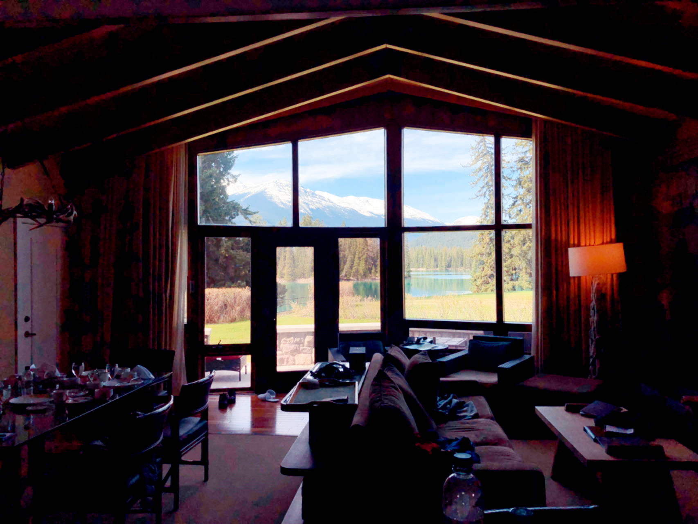
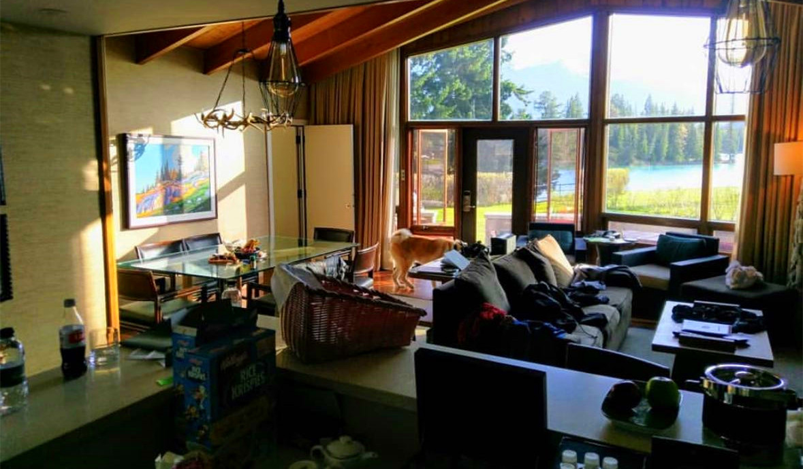
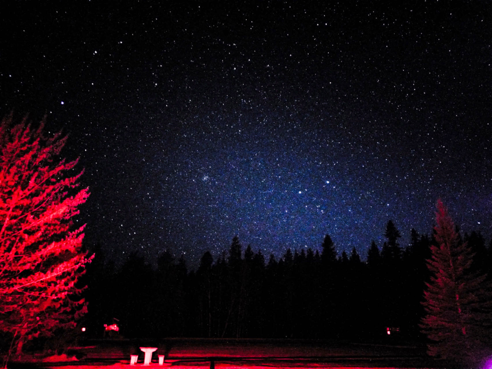
杨女士还分享了近年在贾斯珀拍摄的美景，她补充说：“重建不知道要多久，这些美景可能成为历史。”
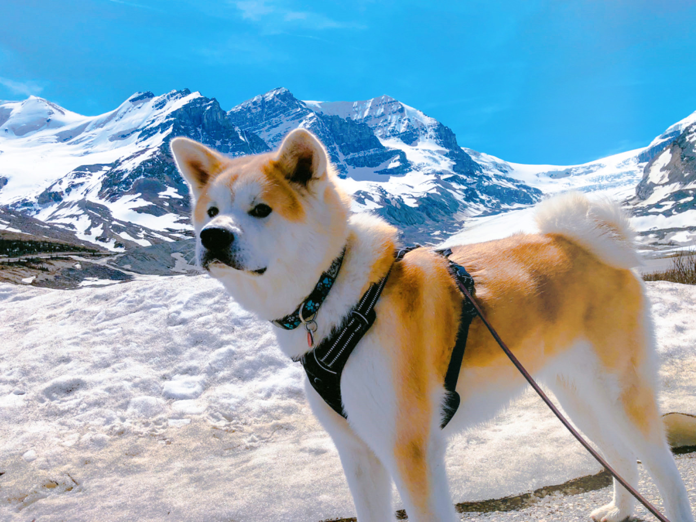
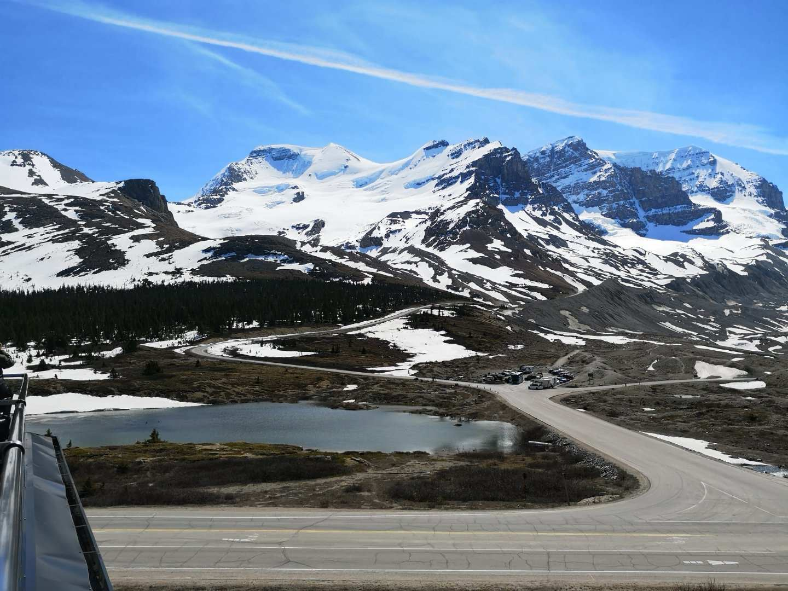
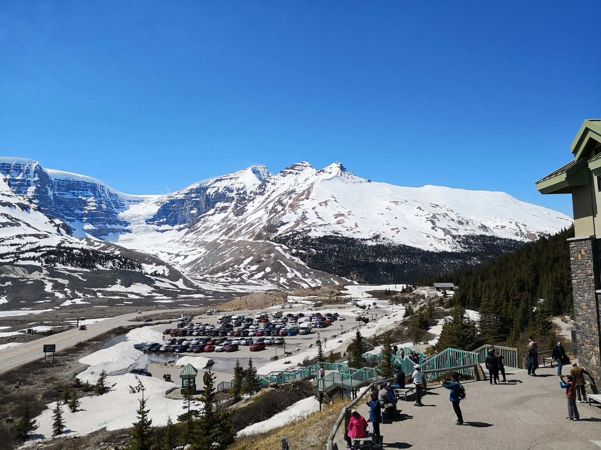
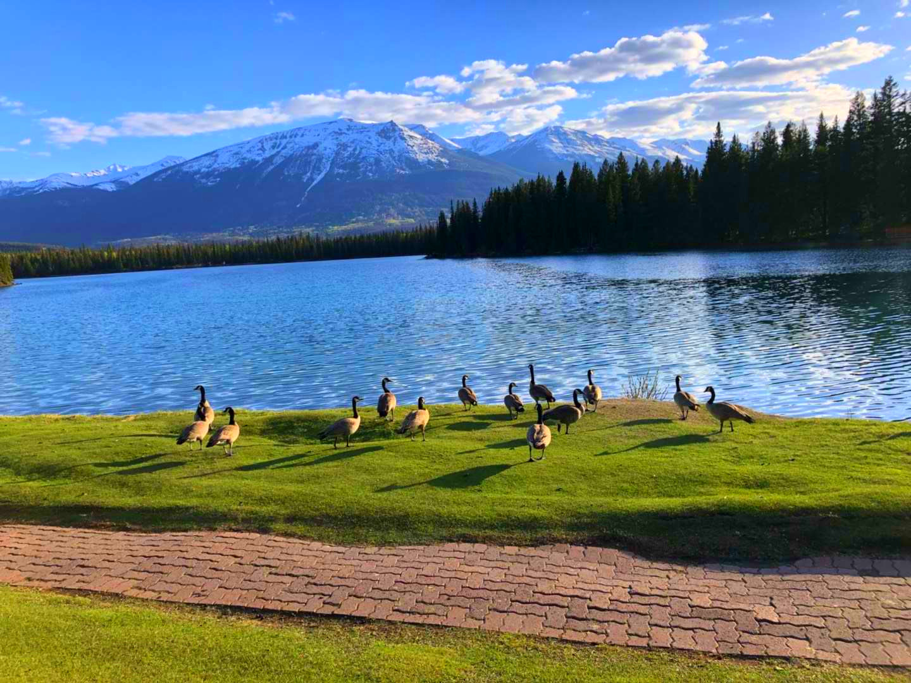
根据最新的旅游警示，贾斯珀国家公园仍然关闭，重新开放的预计日期尚未确定。当局呼吁国民非必要暂时不要前往，并请密切关注加拿大公园管理局和贾斯珀市政府的网站，以获取最新资讯。加拿大公园管理局已自动取消 9 月 3 日之前的所有露营预订并退款。
图：受访者提供